Dear friends,
Mark and I hope that all is well with you, and wish you the best for the coming year.
We continue to do a lot of traveling; this year we seemed to specialize in many quite short trips. (I had health problems in the spring (bronchitis) and fall (pneumonia), which sadly canceled some travel and visits including a conference and visit to a former student (Nick) in Okinawa, but happily I'm now quite well.) In addition to seven (!) brief cross-country trips for my work, Mark and I went on several short excursions just for fun. The first was a two day dash to Washington DC in January, mostly to see the special Vermeer exhibit at the National Gallery. One of the highlights of that exhibit was seeing the two paintings "The geographer" and "The astronomer" next to each other (normally the paintings are in museums in different countries). In June we took a day trip from Lincoln to visit Willa Cather's childhood home in Red Cloud, Nebraska, and to stand at the geographic center (centroid) of the 48 contiguous US states a few miles south in Kansas. In December while hiking at Valley of Fire state park in Nevada we saw interesting footprints of many creatures that had walked through the red-orange sand.
| 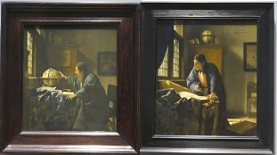 | 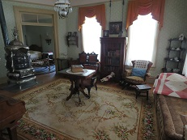 |
| 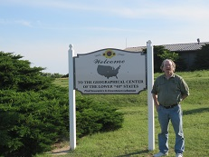 | 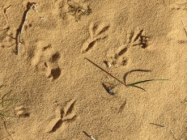 |
This year at UNL we very much enjoyed having several visits from former students and/or coauthors - Anisah, Ashley, Irena, Tim, and Zoran all came to Lincoln this year. We enjoy visitors and look forward to more in the coming year! Our work year was a bit more intense than usual, including two months' consulting work in California over the summer. On summer weekends we got to see dolphins frolicking and sunsets from the beach in La Jolla, baby flamingos at the San Diego zoo with our friends Megan and Mike and their family, and black skimmers in the south end of SD bay while visiting with our friends Melanie and Michelle and their family.
| 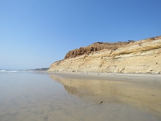 | 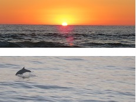 |
| 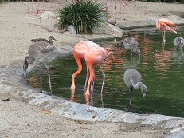 | 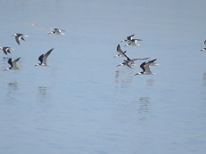 |
Birdwatching through the windows of our house in Lincoln turned up an amazingly long list of new species in our back yard this year. For those of you who might be interested in details, our backyard bird list added fox sparrow (red/taiga form), Harris' sparrow, white throated sparrow, house wren, rock dove, gray catbird, Wilson's warbler, yellow-rumped warbler, and yellow-bellied sapsucker (the latter two are pictured). In the list of birds we've seen in our immediate neighborhood (within a half mile of our house) we added semipalmated sandpiper (pictured in one of our two very unusual April snowfalls), lesser scaup, brown creeper, and hermit thrush, and within about 15 miles of our house we saw fulvous whistling ducks and white-faced ibis.
| 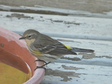 | 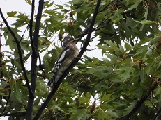 | 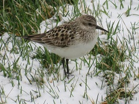 |
In 2018 our experience with unusual things that fly also included many man-made objects, including the space shuttle Discovery at the National Air and Space Museum, a Russian cargo plane (Volga Dnepr airlines) that flew quite low over our house, and the GE propulsion test platform that also flew low going past us in California (one of the plane's engines is very different from the other three!).
| 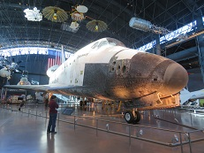 | 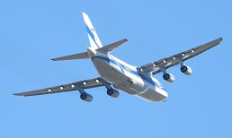 | 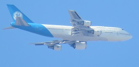 |
| 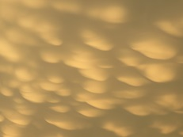 | 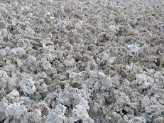 | 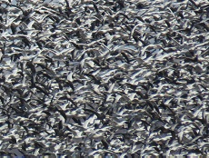 |
Happy holidays and new year to all of you! Mark and I hope you've had a good year in 2018, wish you the very best for 2019.
Susan
| 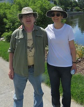 |